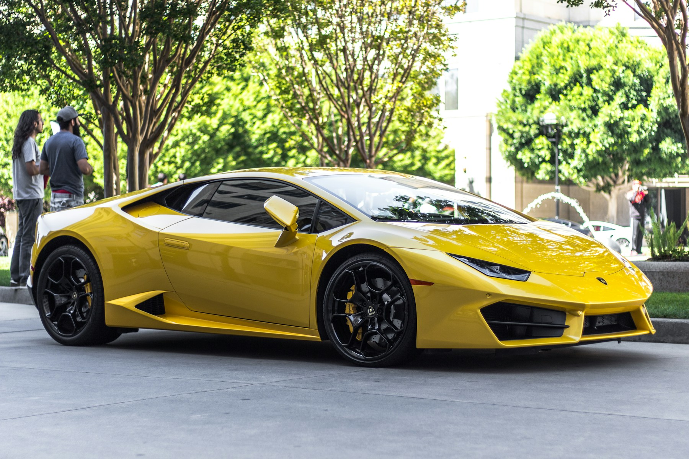
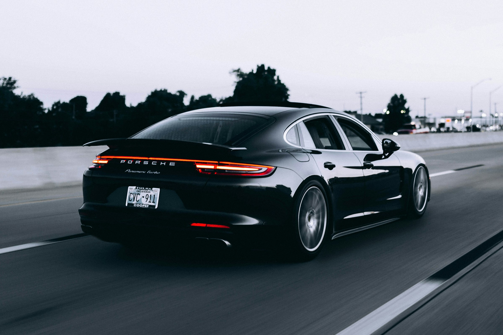

01
EXPERIMENTAL PRODUCT LAUNCH

ISSUE 002 / DIGITAL ROADBOOK
一份关于旅行车、道路、代码与现场感的个人数字档案。
进入最新记录Live archive / 云端文章
云端文章会在这里形成不断变化的编辑版面。离线时，最近一次快照仍然可读。
Parallel worlds / 平行项目

EXPERIMENTAL PRODUCT LAUNCH
DAILY PUBLIC SNAPSHOT